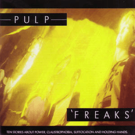
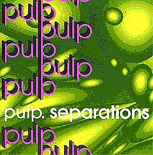
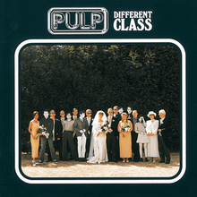

<!--2372036_Muhammad Sava Akbar Bastaman_B-->
<!DOCTYPE html>
<html lang="en">
<head>
    <meta charset="UTF-8">
    <meta name="viewport" content="width=device-width, initial-scale=1.0">
    <title>Pulp</title>
    <link rel="stylesheet" href="styl.css">
    <link rel="stylesheet" href="style3.css">
    <link rel="preconnect" href="https://fonts.googleapis.com">
    <link rel='stylesheet' id='theme-font-awesome-css' href='//use.fontawesome.com/releases/v5.14.0/css/all.css' type='text/css' media='all' />
    <link rel="stylesheet" href="https://cdnjs.cloudflare.com/ajax/libs/font-awesome/4.7.0/css/font-awesome.min.css">
    <link rel="preconnect" href="https://fonts.gstatic.com" crossorigin>
    <link href="https://fonts.googleapis.com/css2?family=Abril+Fatface&family=Amiri:ital@1&family=Girassol&family=Titan+One&display=swap" rel="stylesheet">
    <link href="https://cdn.jsdelivr.net/npm/bootstrap@5.3.2/dist/css/bootstrap.min.css" rel="stylesheet" integrity="sha384-T3c6CoIi6uLrA9TneNEoa7RxnatzjcDSCmG1MXxSR1GAsXEV/Dwwykc2MPK8M2HN" crossorigin="anonymous">
</head>
<aside>
    <header style="background-color: aqua;">
    </header>
    <nav>
      <nav class="navbar navbar-expand-lg bg-secondary">
      <div class="container-fluid">
          
        <a class="navbar-brand" style="color:black" style="font-family: 'Amiri', serif;"> &nbsp;Bastaman</a>
        <button class="navbar-toggler" type="button" data-bs-toggle="collapse" data-bs-target="#navbarSupportedContent" aria-controls="navbarSupportedContent" aria-expanded="false" aria-label="Toggle navigation">
          <span class="navbar-toggler-icon"></span>
        </button>
        <div class="collapse navbar-collapse" id="navbarSupportedContent">
          <ul class="navbar-nav me-auto mb-2 mb-lg-0">
            <li class="nav-item">
              <a class="nav-link active" style="color:red" class="warnafontnav" aria-current="page" href="index.html">Home</a>
            </li>
            <li class="nav-item">
              <a class="nav-link" style="color:white" class="warnafontnav" href="#album">Albums</a>
              <li class="nav-item">
              </li>
                <a class="nav-link" style="color:white" class="warnafontnav" href="#spotify">Spotify</a>
              </li>
          </ul>
        </div>
      </div>
      </nav>
  </nav>
      <!--Navbar-->
      <main>
        <aside>
            <h1>Pulp</h1><br><br>
            <p>
              Pulp are an alternative rock band that formed in 1978 in Sheffield, England, United Kingdom. The band’s best known and most stable lineup consists of Jarvis Cocker (vocals), Russell Senior (guitar, violin), Mark Webber (guitar), Candida Doyle (keyboards), Steve Mackey (bass) and Nick Banks (drums). Although many members have had a long tenure with the band, the only constant member has been Cocker. In 2011, it was announced on Pulp’s official website that the band’s classic lineup would reunite and perform at several festivals, including Isle of Wight, that year.<br><br>

              Originally called “Arabicus Pulp” (although they shortened it to Pulp within a year), the band achieved sudden success some thirteen years after their formation and became known during the Britpop era as much for their music as for frontman Cocker’s antics (notably conducting a stage invasion during Michael Jackson’s performance of Earth Song at the 1996 BRIT Awards).<br><br>
              
              Achieving little success off the back of a Peel session in 1981, Pulp were finally able to release their debut album, It, in 1983. This album and its 1986 follow-up, Freaks, showcased a Pulp keen on Nick Drake (notably on the It single, My Lighthouse), with strong folk roots and little sign of the tendencies for storytelling and acid house music which would eventually bring forth success.<br><br>
              
              After the release and commercial flop of “Freaks”, the band disbanded for a year, but reformed a year later to record a third album, Separations. Delayed for three years after its recording, Separations showed Cocker’s increasing exposure to acid house, featuring multiple synths, and a hit single, My Legendary Girlfriend, which helped Pulp’s career start to rocket.<br><br>
              
              Their next single, Babies, which would eventually feature on their 1994’s commercial breakthrough His ‘n’ Hers, and it was the first example of the Pulp-sound most listeners associate with the band–cheap synths, rolling guitars, and Cocker’s deadpan vocals telling a story. “His ‘n’ Hers” in sound, was lumped in with the Britpop movement of the time, receiving commercial and critical acclaim. However, it was the 1995 single Common People, which finally saw them become known, eventually charting at number 2 in the UK charts. Awash with Britpop guitars, catchy keyboard lines and that trademark Cocker vocal performance it has remained a favorite. A successful appearance at Glastonbury that summer cemented their fame, and their success was subsequently confirmed by the release of Different Class, which arrived at the peak of the Britpop movement and featured this song and other UK hits as Disco 2000 and Sorted for E’s & Wizz.<br><br>
              
              Their last two albums, 1998’s darker This Is Hardcore, -an album that marked the end of the Britpop era- and 2001’s more downbeat We Love Life were commercial successes, but Pulp were no longer as famous or trendy as they had been in the height of Britpop. Following their curation of a music festival, Auto, in 2002, the band announced that they would be embarking on an “indefinite hiatus”.<br><br>
              
              In 2003, Jarvis Cocker released an album as Relaxed Muscle and then two solo efforts, 2006’s Jarvis and 2009’s Further Complications.<br><br>
              
              On 8th November 2010, it was announced that the band with its most relevant lineup will reform to play a series of gigs in summer 2011.</p>
              <br><br><iframe id="spotify" style="border-radius:12px" src="https://open.spotify.com/embed/artist/36E7oYfz3LLRto6l2WmDcD?utm_source=generator" width="100%" height="352" frameBorder="0" allowfullscreen="" allow="autoplay; clipboard-write; encrypted-media; fullscreen; picture-in-picture" loading="lazy"></iframe>
            </aside>
        <article>
            
            <div style="padding-left: 70px;" class="sociallinks">
              <a href="https://www.facebook.com/welovepulp/" target="_BLANK"><i class="fab fa-facebook"></i></a>
              <a href="https://www.instagram.com/welovepulp?igsh=MWNpbW1ybnp6c3R6Zw" target="_BLANK"><i class="fab fa-instagram"></i></a>
              <a href="https://open.spotify.com/artist/36E7oYfz3LLRto6l2WmDcD?si=5GBEYWTSQtaomac0IoTTIg" target="_BLANK"><i class="fab fa-spotify"></i></a><br><br>
              </div>
              <h2 id="album">Popular Albums</h2>
              <div class="row">
                <div class="column">
              
              <figcaption>Freaks<br>1987</figcaption>
            </div>
            <div class="column">
              
              <figcaption>His n Hers<br>1994</figcaption>
            </div>
            <div class="column">
              
              <figcaption>Seperations<br>1992</figcaption>
            </div>
            <div class="column">
              
              <figcaption>Different Class<br>1995</figcaption>
              </div>
              </div>
            </article>
    </main>
    <footer id="bgfooter">
      <p>&copy; 2024 My Music Website. All rights reserved.</p>
      <style>
      footer {
          background-image: url(https://cdn.pixabay.com/photo/2012/04/10/16/14/union-jack-26119_1280.png);
          background-repeat: no-repeat;
          margin: 30px;
          justify-content: center;
          position: sticky;   
          background-size: 100%;
          text-align: center;
          }
      </style>
  </footer>
</body>
</html>